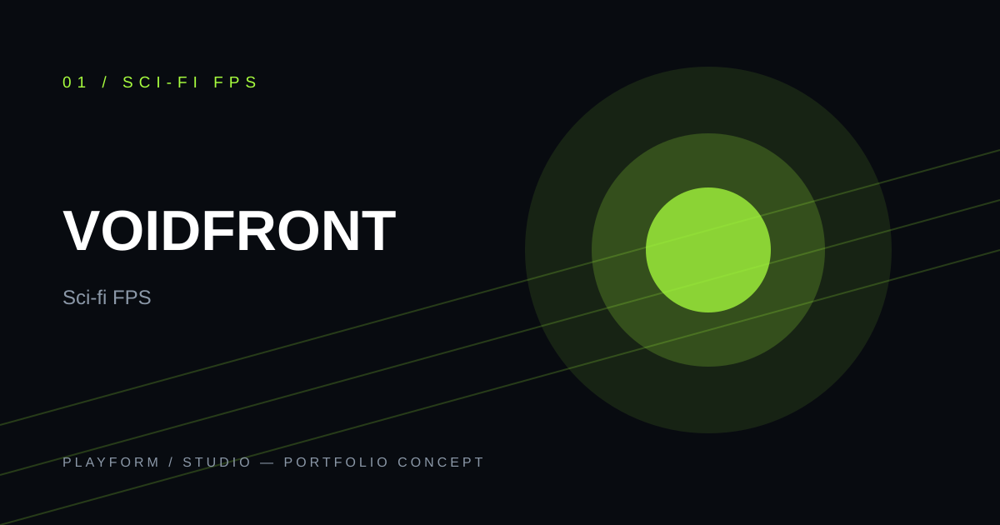

ASHEN MOON
Secure the relay buried beneath the glass dunes. Radio silence after touchdown.
ENVIRONMENT / LOW-G
A signal from a dead moon. A squad with one chance. Take command on the edge of known space, where the map ends and the war gets personal.

CONCEPT / 001SECTOR 07 / UNCHARTEDThree live theatres. One fractured front. Choose your insertion point.
Secure the relay buried beneath the glass dunes. Radio silence after touchdown.
Board a drifting carrier before its reactor crosses critical temperature.
Hold a frontier settlement until the evac ship clears the canyon.
Something is answering transmissions that were sent before the first colony ship launched. The official report says interference. The people who were there call it a voice.
First through the breach. Heavy armor, kinetic shield, short fuse.
A closer look at the design decisions that make this world work — from its central fantasy to the details that give it texture.
Cover is a resource. Noise is a decision. Reinforcements learn your habits.
A role is a promise to your squad. Bring the gear that helps you keep it.
Control points, weather, and faction pressure change the map between deployments.
This is an interactive portfolio concept. Explore the page, test the controls, and imagine where the world could go next.